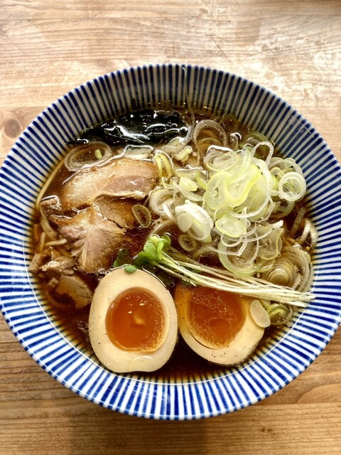
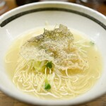
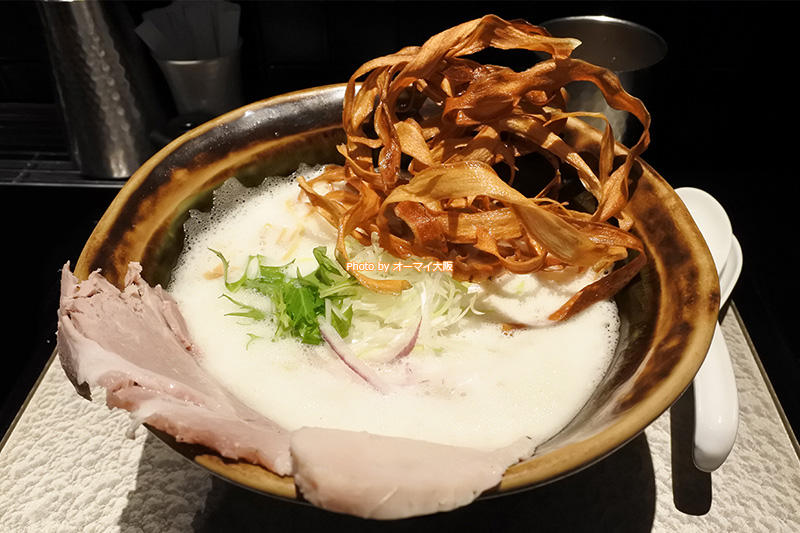
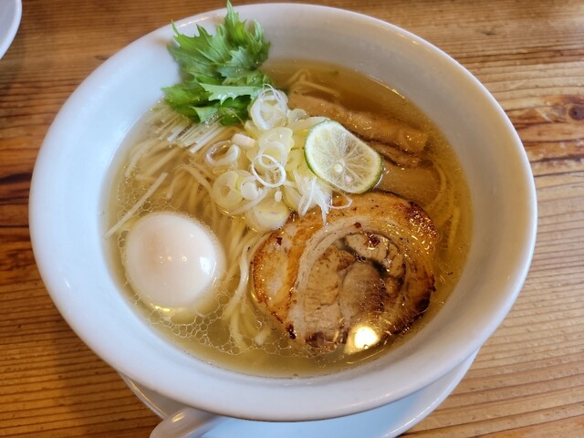
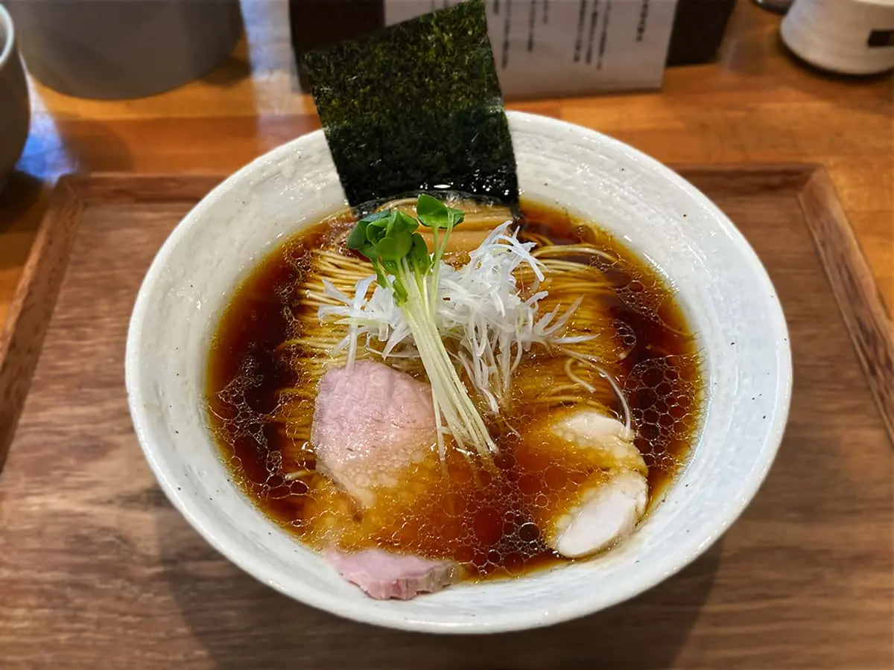

Pure soup ramen
しずく
徳島県産食材をふんだんに使った優しい醤油ラーメンがおすすめ
Googleマップで見る

堂の浦
乳化させた豚骨スープがおいしく鯛の皮をオーブンで焼いてトッピングしているのが特徴です
Googleマップで見る

鶏Soba 座銀 本店
鶏と豚の２種類のチャーシューが特徴です。ごぼうのフライのトッピングが目新しく秀逸
Googleマップで見る

らーめん工房 りょう花
炭焼きチャーシューと徳島名物のすだちをふんだんに使った一杯。味噌つけ麵も絶品。
Googleマップで見る

MENYA NAKAGAWA
鶏魚介スープにと白湯スープがマッチした一杯。もちもちのチャーシューが最高です。
Googleマップで見る